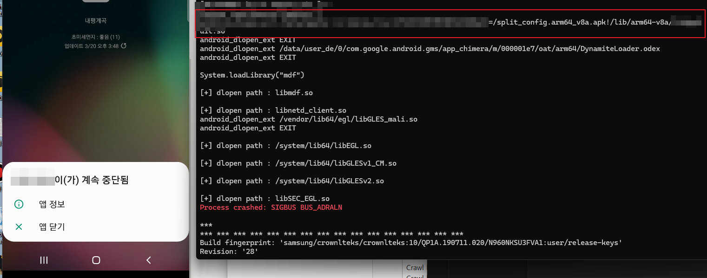
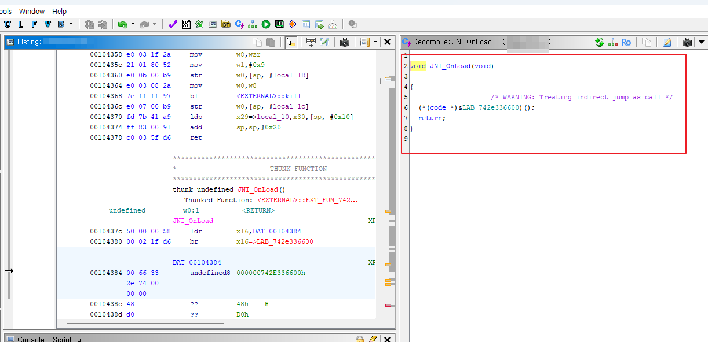
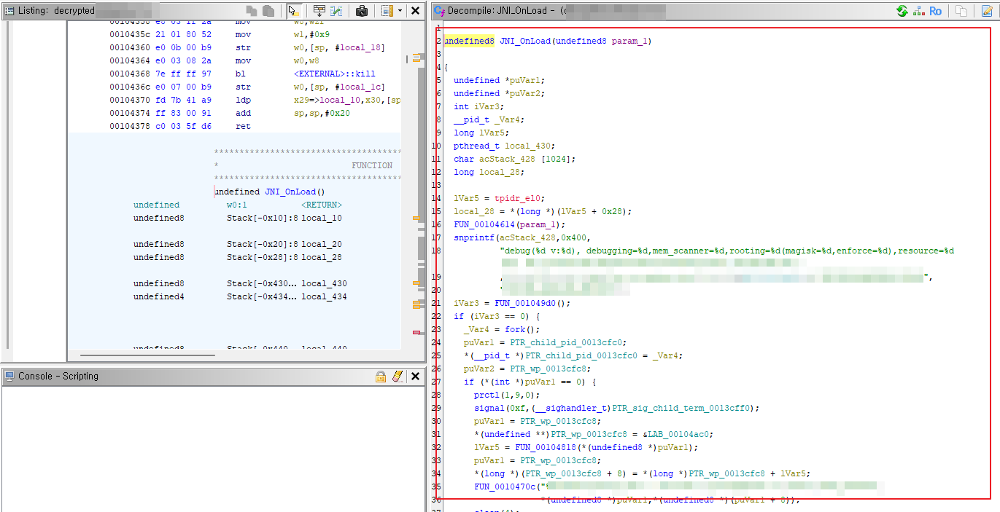
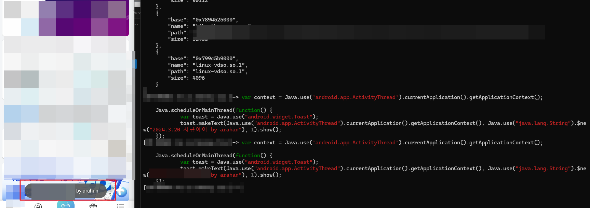
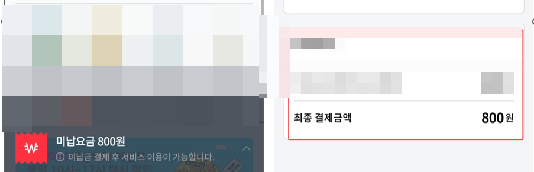
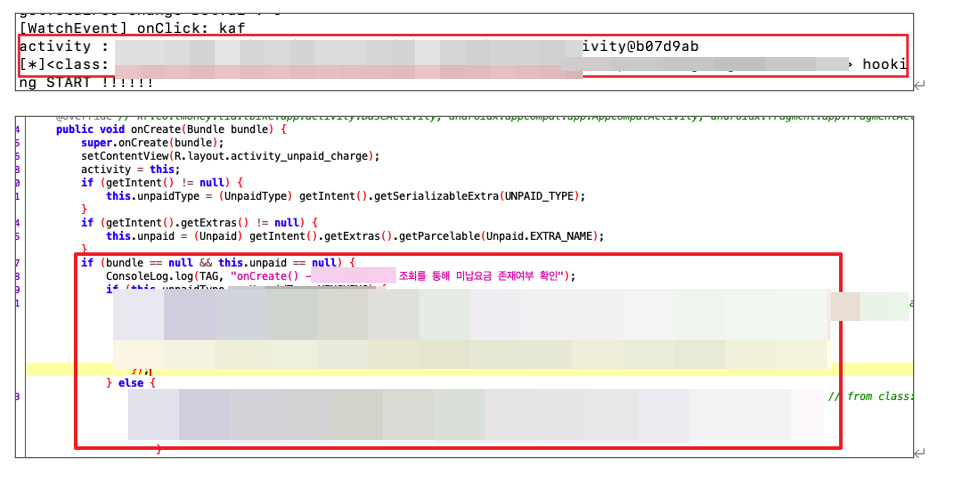
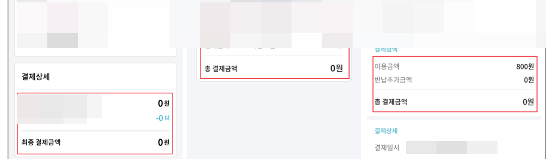

모바일 앱에 적용된 보안 솔루션을 분석·우회하는 절차는 다음과 같다.
.so, .dex)프로세스 자체는 복잡하지 않지만 분석·검증 단계에 많은 시간과 노력이 든다. 그럼에도 우회가 필수인 이유는, 우회하지 못하면 진단 자체가 불가능하거나 발견할 수 없는 취약점이 다수 존재하기 때문이다. (보안상 민감한 정보는 제외하고 일부만 기술한다.)
Frida 후킹으로 앱 실행 시 로드되는 모듈(.so) 목록을 수집했다. 공용 라이브러리
(libmdf.so, libnetd_client.so, libEGL.so 등)를 제외하면,
<패키지>/split_config.arm64_v8a.apk!/lib/arm64-v8a/<보안모듈>.so 가
로드된 직후 앱이 종료되는 것을 확인했다. 이 파일이 보안 솔루션과 관련될 가능성이 높아, 추출하여 리버싱 도구로 상세 분석한다.

추출한 파일을 Ghidra로 열어 메인 진입점 JNI_OnLoad를 살펴보면 아무 정보가 없다.
이 파일은 과거 점검에서 발견된 취약점을 솔루션 업체가 보완하며, 보안 탐지 함수들을 암호화해 앱 실행 시 복호화하는 방식으로 패치한 것이다.
따라서 실행 전 추출한 파일만으로는 탐지 함수를 볼 수 없어 분석이 불가능하다.

JNI_OnLoad — 간접 점프(indirect jump)만 보이고 로직은 런타임 복호화 전까지 비어 있다.그러나 앱을 실행시킨 뒤 해당 .so가 로드되는 시점에 메모리 덤프로 추출하면,
복호화되어 채워진 코드를 확인할 수 있어 분석이 가능해진다. (보안상 분석·덤프 과정은 생략한다.)

복원된 탐지 함수들을 분석·검증한 뒤 Frida 후킹으로 보안 솔루션을 우회하여 앱을 정상 실행할 수 있게 되었다. (동작 우회 코드는 비공개.)

솔루션이 우회되자 "미납 요금" 결제 기능을 진단할 수 있게 되었다. 결제 금액을 조작하려면 처리 함수를 찾아 변조해야 하는데, 앱을 직접 변조하면 무결성 검증에 탐지되어 실행이 불가능하다. 그러나 솔루션 우회 후에는 Frida 후킹이 가능해져, 결제 처리 함수를 찾아 분석하고 후킹 코드를 작성할 수 있었다.


onCreate에 후킹을 부착해 결제 금액 처리 흐름을 분석한다. (개발사·클래스 식별 정보 마스킹)그 결과 미납 요금 결제 금액을 "0원"으로 조작하는 데 성공했다.

이 외에도 통신 구간 진단은 프록시로 패킷을 캡처해야 하는데, SSL Pinning이 적용된 앱은 Burp Suite 같은 프록시 설정 시 통신이 차단되어 수집이 불가능하다. "메모리 영역 중요정보 노출", "단말기 내 중요정보 노출" 점검도 루트 권한이 필요하나, 보안 솔루션이 적용된 앱은 루트 탐지로 차단되어 수행할 수 없다.